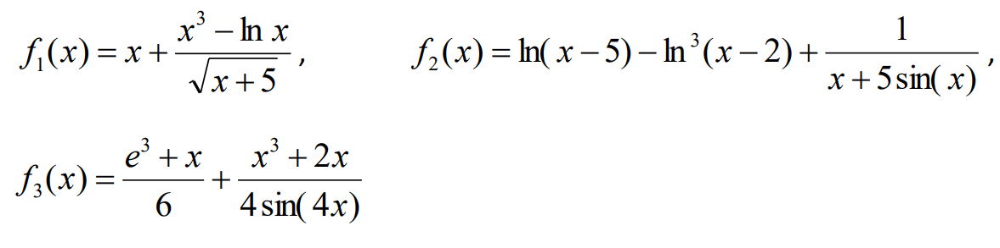

Задание
Составить функцию определения характеристик функции y = f(x) по вариантам задания, где каждая характеристика рассчитывается отдельной функцией и передаётся в функцию расчёта характеристик в виде массива, а рассчитанные характеристики возвращаются из функции также в виде массива. Функция задана в дискретных точках отрезка [a, b] с постоянным шагом h. Используя ее, найти характеристики заданных ниже функций f1, f2 и f3. Для заданных функций предусмотреть создание вариантов функций (через функции высшего порядка) для:
- мемоизации значений в замыкании и возможность получения только предрасчитанного значения и количества предрасчитанных значений через собственные методы функции;
- вывод в консоль отладочной информации: время вызова, аргумент, значение функции;
- сохранение количества вызовов функции в замыкании, получение и обнуление этого значения через собственные методы функции.
Интерфейс программы должен предоставлять возможность выбрать диапазон и шаг определения функции, выбрать вид функции (f1, f2 или f3), выбрать сочетание рассчитываемых характеристик, а также сочетание вариантов функции (мемоизированная, отладочная, сохранение кол-ва вызовов).
Характеристики: минимум, кол-во положительных значений, является ли монотонно-возрастающей.
| f1(x) | f2(x) | f3(x) |
|---|---|---|
| x > 0 | x > 5 | x ≠ 0 |